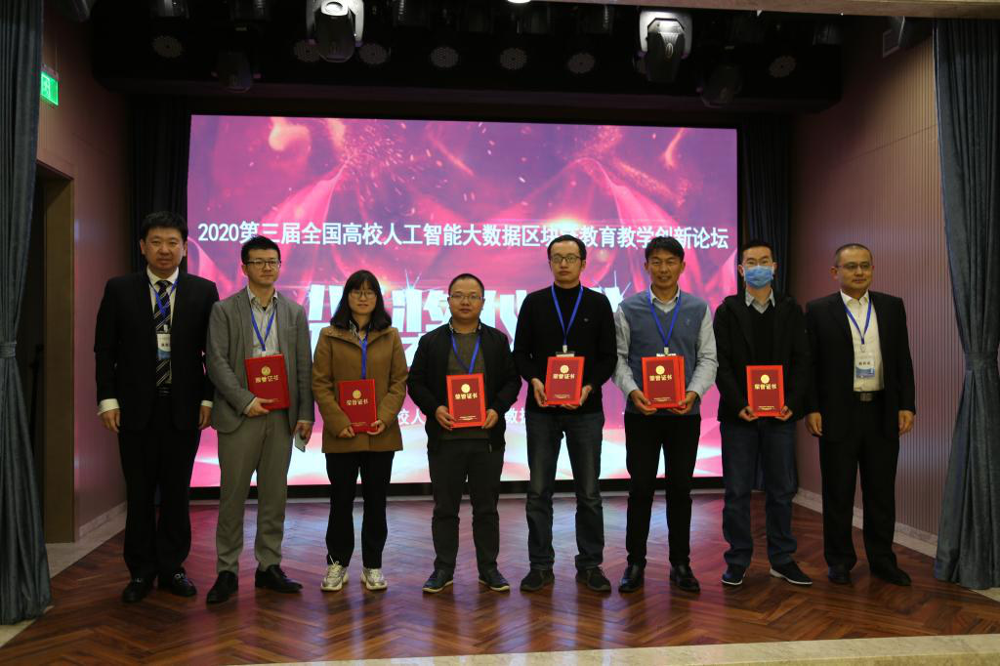

Our institute won
the third national university artificial intelligence education teaching "innovation award"
On November 14, 2020, the Third National University AI Big Data Innovation Forum was held in Beijing. Professor Zhou Yi of our school won the "First Prize of Academic Innovation" and Associate Professor Zhang Yanyu won the "First Prize of Teaching Innovation".
This forum is an important part of the implementation of the Ministry of Education's national strategy of "University-Industry Cooperation and Collaborative Education", which is important for promoting the reform of university talent training, encouraging the transformation and upgrading of university education and teaching, innovating the university-enterprise cooperation model, accelerating the construction of artificial intelligence, big data and blockchain majors and accelerating the development of the industry. Talent training is of great significance. More than 120 representatives from industry, academia and research attended the conference. Experts and scholars from more than 80 colleges and universities and more than 40 enterprises from all over the country gathered to discuss the topic of "Artificial Intelligence and Big Data Blockchain Innovation in Education and Teaching", which is the key to the "Post-Epidemic Era" Artificial Intelligence and Big Data Blockchain Education and Teaching in National Colleges and Universities. The conference provided innovative ideas and practical guidance on career development, discipline construction, integration of industry and education, and university-enterprise cooperation. The conference honored advanced individuals with innovative ideas, innovative achievements, outstanding achievements and significant contributions, and awarded the "Innovation Award" to frontline teachers who have made outstanding contributions to the field of artificial intelligence. Eleven people won the "Teaching Innovation Award".
The excellent results achieved by our college in the "Innovation Award" for AI education and teaching in national universities is a full affirmation of the college's "New Engineering" major construction and talent cultivation model. The college will adhere to the innovative development concept of "industry-university cooperation and collaborative education", speed up the construction of "new engineering" majors and education platform, improve the quality of talent cultivation, and promote the university's "double first-class" development.
